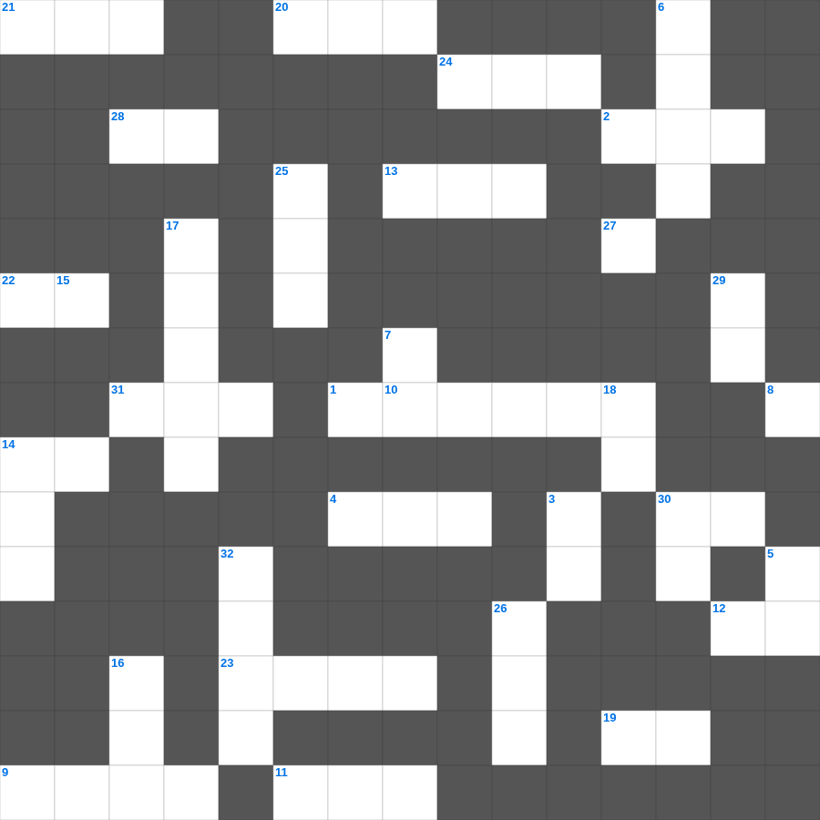

레위기: 거룩한 제사
📌 서비스 정의
십자가로세로는 교회 주보와 주일학교에서 사용할 수 있는 성경 기반 가로세로 퍼즐 서비스입니다. 성경 인물, 사건, 핵심 구절을 바탕으로 제작되었습니다. 온라인 풀이 및 인쇄 기능을 제공합니다.
📖 레위기란?
레위기는 제사와 제물, 제사장의 역할, 정결법과 거룩한 생활에 대한 하나님의 말씀을 담고 있습니다. 이스라엘 백성이 거룩한 민족으로 살아가기 위한 율법이 기록되어 있으며 총 27장입니다.
📚 레위기의 주요 사건·주제
다섯 가지 제사 제도 · 제사장 위임식 · 정결법과 부정한 음식 · 속죄일 규례 · 희년 제도
레위기의 말씀을 퀴즈로 배우는 레위기 성경 퀴즈 문제입니다. 가로 힌트와 세로 힌트를 보고 35개의 단어를 맞춰보세요. 인쇄도 가능하고 정답 확인도 바로 되니 소그룹 모임이나 가정 예배 시간에도 활용하실 수 있습니다.

📝 가로 힌트
1. 제물을 통째로 태워 드리는 제사
2. 이스라엘이 외칠 때 무너진 성
4. 입다의 고향
9. 지붕을 뚫고 내려온 병자
10. 탕자가 돌아왔을 때 아버지가 입혀준 것
11. 엘리야가 바알 선지자들과 대결한 산
12. 동방 박사들이 드린 세 가지 예물 중 하나
13. 죄를 속하기 위해 드리는 제사
14. 사람이 마음으로 믿어 의에 이르고 입으로 이것하여 구원에 이르느니라
19. 보냄을 받은 자라는 뜻
20. 모든 씨보다 작으나 커서 나무가 되는 씨
21. 언어가 혼잡해져 사람들이 흩어지게 된 탑
22. 바다의 물고기와 이것들
23. 천사 가브리엘이 마리아에게 예수 탄생을 알림
24. 성막 가장 안쪽, 하나님의 임재 상징
27. 잃어버린 한 마리 이것을 찾는 목자
28. 예배의 시작을 알리는 종소리나 기도
30. 열매를 맺게 하시는 분
31. 하나님이 약속하신 젖과 꿀이 흐르는 땅
📝 세로 힌트
3. 땅 끝까지 이르러 내 이것이 되리라
5. 단련하신 후에는 내가 이것 같이 나오리라
6. 노동자 하루 품삯에 해당하는 은화
7. 곡물로 드리는 제사
8. 낮을 주관하게 하신 큰 광명체
14. 시편, 잠언, 전도서 등을 일컫는 말
15. 오직 정의를 이것 같이 흐르게 할지어다
16. 매주 교체하는 거룩한 떡
17. 열매 없는 이것나무를 예수님이 저주하심
18. 예수님의 옷 가에 달렸던 것
23. 다윗이 연주하던 악기
25. 예수님이 기도하러 자주 가신 산
26. 삼손의 힘의 비밀을 알아낸 여인
29. 구원의 이것과 성령의 검
30. 동방박사들이 별을 보고 찾아와 경배한 날
32. 어린 양의 보좌로부터 나오는 이것의 강
🧑🏫 교회 교육 자료 활용
이 퍼즐은 주일학교 교재 추천 자료로 활용할 수 있고, 주일학교 주보에 넣기 좋은 분량으로 구성되어 있습니다. 수업용 주일학교 교안에 활동지로 붙이거나, 예배 후 복습용 주일학교 공과교재로 바로 사용할 수 있습니다.
🏷️ 키워드
레위기 성경 퀴즈 문제, 레위기, 십자가로세로, 성경퀴즈, 말씀퀴즈, 가로세로퍼즐, 주일학교 교재 추천, 주일학교 주보, 주일학교 교안, 주일학교 공과교재